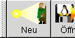

Größe und Position des Fensters speichern:
Defaulteinstellung: deaktiviert |
|
Automatisches verkleinern des Fensters:
Defaulteinstellung: deaktiviert |
|
Bilder anzeigen:
Ist diese Option aktiviert, so werden einige Titelbilder der Midgardregelwerke und Quellenbücher angezeigt.
Das Deaktivieren dieser Option reduziert die Breite das Hauptfensters um ca. 1/3.
Defaulteinstellung:
Linux: aktiviert;
Windows: deaktiviert
|
|
Menüleiste:
Über diese Option läßt sich die Menüleiste ein oder ausblenden.
Defaulteinstellung: aktiviert |
 |
Knopfleiste
Mittels dieser Option wird die Buttonleiste ein-, bzw. ausgeblendet.
Defaulteinstellung: aktiviert. |
 |
Icons anzeigen:
Die Icons der verchiedener Buttons werden angezeigt.
Defaulteinstellung: aktiviert |
|
Text anzeigen:
Der Text innerhalb diverser Buttons wird angezeigt.
Defaulteinstellung: aktiviert |
|
Text der Reiter anzeigen:
Es werden zusätzlich die Beschriftungen der Notebookreiter angezueigt
Defaulteinstellung: aktiviert |
 → →  |
Icons der Knopfleiste:
Die Icons in der Buttonleiste werden angezeigt.
Defaulteinstellung: aktiviert |
→  |
Beschriftungen der Knopfleiste:
Die Beschriftungen in der Konpfleiste werden angezeigt.
Defaulteinstellung: aktiviert |
→ |
Statuszeile:
Die Statuszeile wird angezeigt.
Defaulteinstellung: aktiviert |
 |